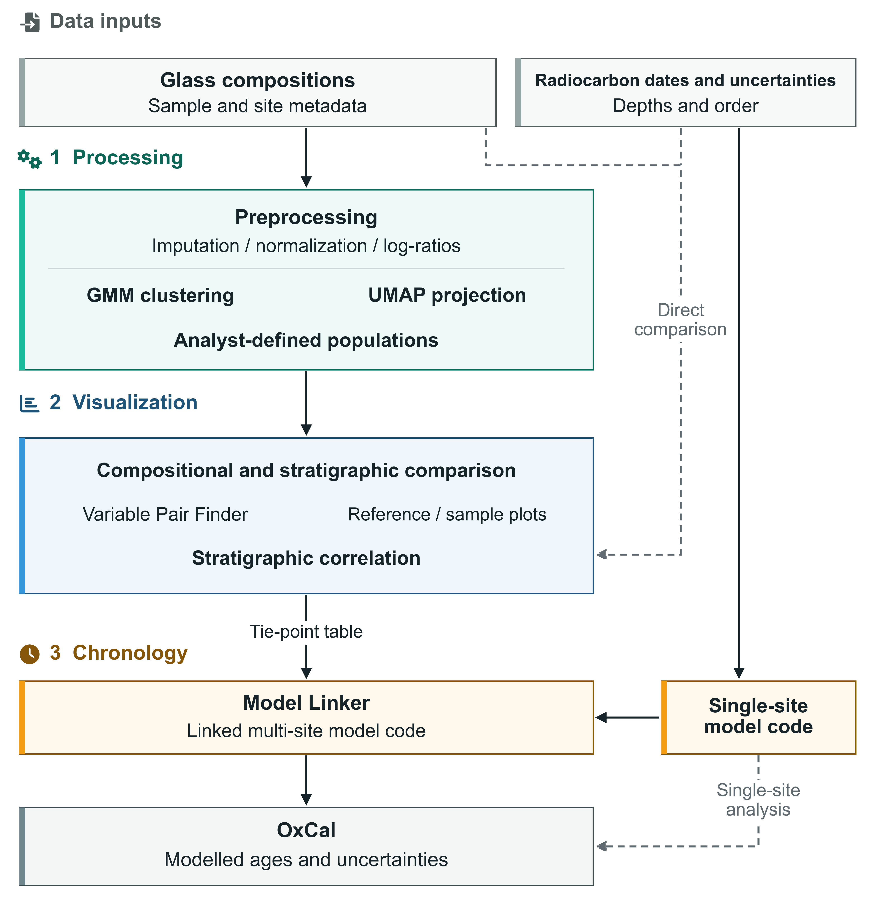

No R installation required
Windows standalone
A self-contained Windows release for local use.
 VARG-Tools
0.9.8
Manuscript review and trusted testing
VARG-Tools
0.9.8
Manuscript review and trusted testing
Open-source tephrochronology workspace
Analyze volcanic-glass geochemistry, assess tephra correlations, and build linked chronologies in one reproducible workspace.

Use the hosted service, install the self-contained Windows build, or work directly from the R or source bundles.
No R installation required
A self-contained Windows release for local use.
For existing R environments
Run the application with R and the documented dependency setup.
MIT licensed
Inspect, cite, adapt, or contribute to the complete application source.
Use Save Project before leaving so a session can be restored later.
Open Processing, Visualization, or Chronology according to the data and task at hand.
Use Close Application in the app sidebar when work is complete to return resources to other researchers.